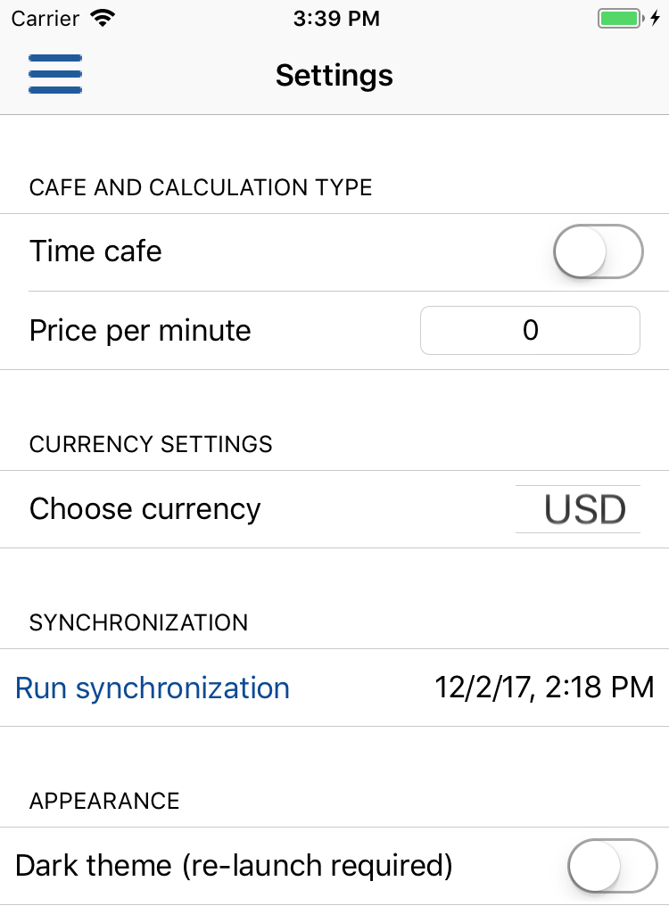
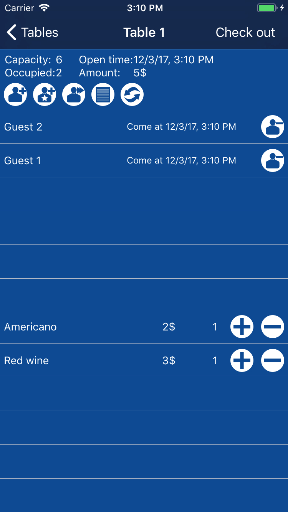

Open application settings. Here you should select type of your cafe. It could be regular or time cafe. If you enabled time cafe setting, you should set price per minute.
Also you should choose currency. iCafeManager uses this setting to display currency symbol for prices.

Unforunately current version of app supports only manual sync to transfer data bewteen devices working with the same Apple ID. WARNING! DO NOT use synchronization for simultaneous work with data using more than one device. You data can be corrupted. Use sync to transfer data to another device ONLY when the second device does not contain application data (application just installed):
1. Install app on the second device.
2. Ensure that the same AppleID is used on both devices (Settings->iCkoud)
3. Runc sync on the first device - open app Settings and press Run sync button. When sync is finished, you time of last sync will appear in the same cell.
4. Run app on the second device and run sync as described on previous step.
5. When sync is finished, check your data by opening Tables, Menu, History and Reports windows. If everything is fine - remove app from the first device.
6. DO NOT use application on the first device and do not run sync while you are working with application on the second device. Simultaneous work with several devices is not supported yet.
In Settings window you can change color theme. Two themes are available: light theme (default) and dark theme. After enabling/disabling dark theme, you should re-launch application. Porform double press on Home button and close app by swiping up. After re-launching app, color theme will be changed.

If you want to remove all data from device and iCloud, remove all Tables and Menu Items. Then perform sync. All data will be removed.